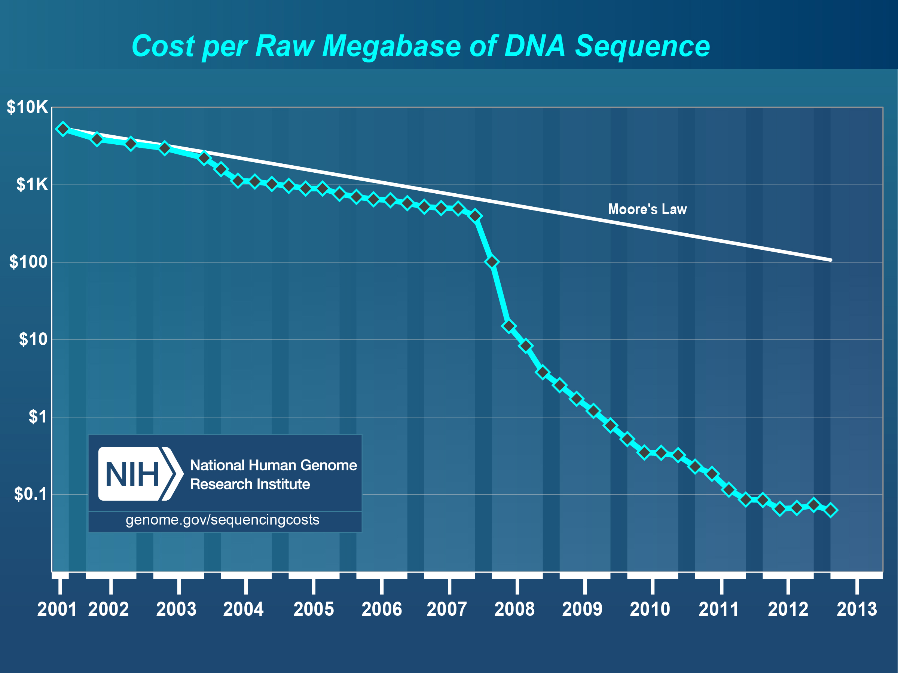
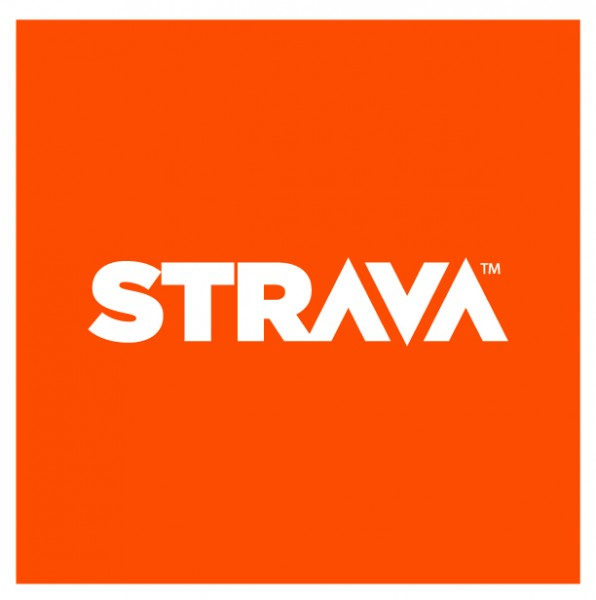
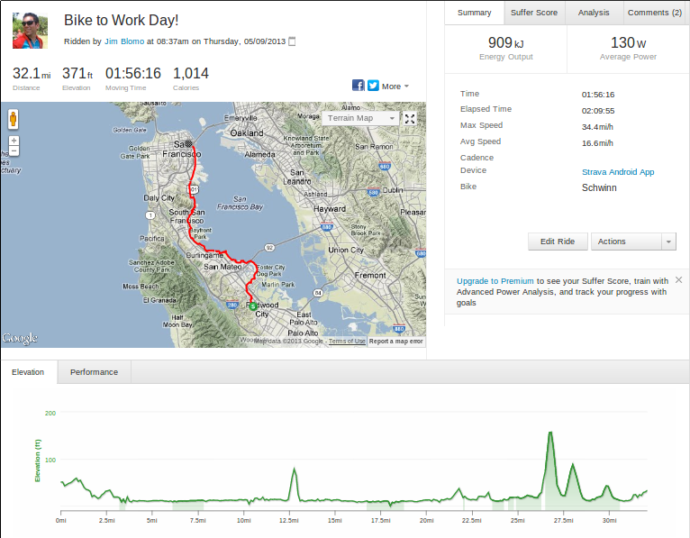
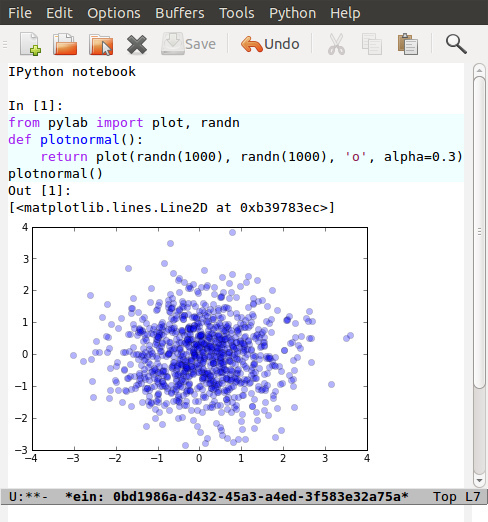
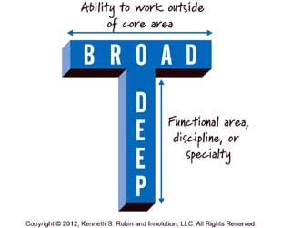
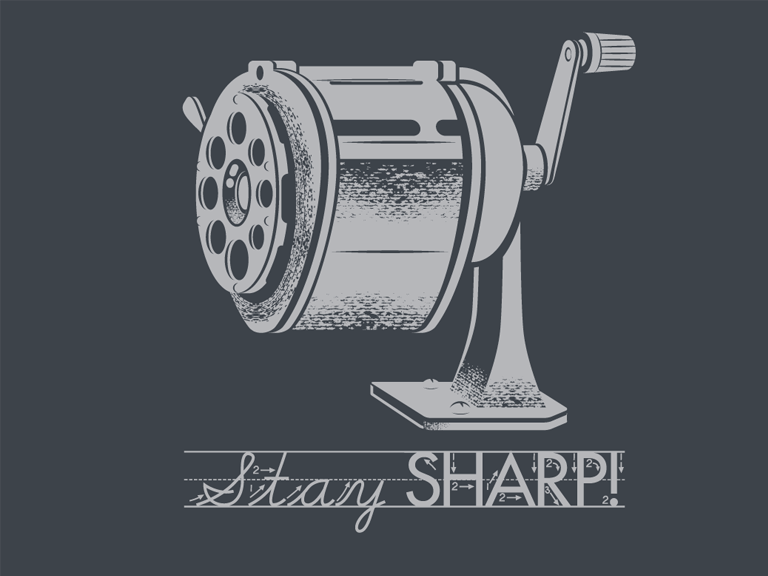

name: inverse layout: true class: left, top, inverse --- # *Datamining IRL* --- ## General vs. Practical + "the language in which you'll spend most of your working life hasn't been invented yet, so we can't teach it to you. Instead we have to give you the skills you need to learn new languages as they appear." + Brian Harvey, [Why SCIP matters](http://www.eecs.berkeley.edu/~bh/sicp.html) ??? ## Important Parts + Important: understanding your domain, asking interesting questions, answering them with data, fitting questions to mathematical concepts + Not as important: scipy lingregress, d3 --- ## But + Who is doing interviews? + Who is starting their own company? + Who wants to build their portfolio? ??? ## Real World + I realize many of you may be needing to apply this stuff very soon + So here's the lecture where I try to tell you what I would do when practicing data mining --- ## Product or Company Ideas + Understand exponential growth + Get the timing right + Execute, execute, execute ??? ## Idea required but not sufficient + Wide variation of thoughts on ideas + One of the biggest road blocks for wanna be entrepreneurs, but most derided + Timing is mostly luck, is the world ready for your ideas? + I think the *vision* is important, it's what drives the company, keeps people working + The plan for the idea less so + The concrete product most important + Let's talk about these elements --- ## Toys + "the next big thing always starts out being dismissed as a “toy.”" + Chris Dixon, [Blog](http://cdixon.org/2010/01/03/the-next-big-thing-will-start-out-looking-like-a-toy/) ??? ## Why? + Also, [Stupid Ideas](http://dcurt.is/what-a-stupid-idea) + A few reasons for this --- ## Exponential Improvements two_col: + The future is changing at a faster rate than ever before + Every field is being quantized, instrumented + "You're not on the Internet?": "You're not analyzing your data?"  ??? ## Change to Data + You think your parents are bad at not operating devices? Your habits will become out of date > twice as fast. + So what happens when we combine exponential improvements and instrumented fields? Overwhelming amounts of data + Winners will be the ones + Obviously web recommendations: data, but also --- ## Exercise two_col:   ??? ## Strava + No device, just data --- ## Thermostats center: ??? ## Nest + OK, they have a device... but what separates them is data --- ## Biology center: ??? ## Gene sequencing + Biology: data, and data growing so fast a single computer can't keep up + img: http://www.genome.gov/sequencingcosts/ --- ## Execute + Users are hiring you to do a job: what is it? + "Institutions will try to preserve the problem to which they are the solution." -- [Clay Shirky](http://www.shirky.com/) + Make your product so easy to use, people do it by accident. ??? ## Do the job + All of these company examples, you're typically not thinking of them as "data processors"... they are solving a specific problem for you + Strava isn't doing any crazy SVM analytics (at least on the consumer facing side): they're showing you min/max, avg speed. Simple, but effective, stuff. + Disruption most often comes from using established technologies in new ways or areas + Can disrupt by completely simplified, often crappy at first, solutions to an even more fundamental problem + Dell did a great job selling cheap computers, then more expensive computers + But now Amazon is saying: "you don't even need to own computers!" (Cloud) + More info: [Clayton Christensen](http://www.claytonchristensen.com/) + Focus on that one thing that is important and do it very, very well --- ## Specifics ([The Joel Test](http://www.joelonsoftware.com/articles/fog0000000043.html)) + Do you use source control? + Can you make a build in one step? + Do you make daily builds? + Do you have a bug database? + Do you fix bugs before writing new code? + Do you have an up-to-date schedule? + Do you have a spec? + Do programmers have quiet working conditions? + Do you use the best tools money can buy? + Do you have testers? + Do new candidates write code during their interview? + Do you do hallway usability testing? ??? ## Joel on Software + When developing software, please follow as many of these as reasonable + Joel Spolksy wrote this in 2000! Still a great guide! + This is what I'd suggest to quickly get moving on the right foot + If you're managing a team, make sure these are happening --- ## Source Control center: <img src="img/git.png" width=100% /> ??? ## Surprised? + Github will solve a few problems on this list, just use it, even if you're developing alone --- ## One step build + Data mining exploration often involves manual commands + *Don't* do that in production + Should have scripts which extract features, build model, verify, deploy ??? ## Area for Improvement + This is actually a big area solutions + Deploying websites has solutions like Heroku, but no equivilant for storing, processing, serving data --- ## Bug Database + Easy to loose track of problems + Also good way to prioritize issues + Use [Github](http://github.com) Issues ??? ## Managing Up + Good defense --- ## Write a Spec + Alternatively, write the press release + Don't write a novel + Disagreements can be solved with code, but after talking ??? ## Bad rap + Developers don't like writing them much + But it helps nail down issues + Yelp uses CEP process + If you get to the "agree to disagree" point, data or code can solve differences --- ## Testers + Use *unit tests* to test code (eg. ```unittest2``` in Python) + Use cross-validation to test models + Very easy to skip, will bite you within 6 months ??? ## Differences + Joel suggests having and paying testers + I don't think this is best use of resources for small companies + Economics change when developers can effectively write tests + *Must* allocate time to this + Add tests when you fix bugs + Helps if developers use product daily --- ## Tools + Right tool for the job + Text Editor: Use ```vim``` or ```emacs``` + ```virtualenv``` (Python); ```RVM``` (Ruby) + Learn the command line ??? ## Woodworker + (slightly off topic from Joel's list) + Woodworkers don't hammer stuff in with their shoe + Make their own tools as first part of job + When a custom problem comes up, make a custom tool + These slides, written with mappings in ```vim``` + Text Editor + Syntax Highlighting + Macros + Interact with other tools + Find across files --- ## How to Use Recommendations two_col: + Start with them as default + If you understand why something is better for your case, use it + Understand trade-offs ??? ## Trade-offs + One of the themes of this course + Trying to provide you with a starting point + My point of view: user driven behavior, engineers implementing solutions --- ## Data Storage + S3 for unstructured data + PostgreSQL for structured + Hive on S3 for very large structured data ??? ## Data most important asset + S3 is a pay-as-you go model, opens up many data processing possibilities + Don't have to worry about how to connect + PostgreSQL solid database, but also offers many improvements like storing geo data + Once you get beyond PostgreSQL limits, use Hive to structure data in S3 --- ## Exploration two_col: + Python + IPython Notebook, matplotlib  ??? ## Py + Main reason: it is convenient and practical to stay in the same language as production + Using production libraries, settings, to extract data + R, matlab/octive, Tableau are typically not used in large production code + SAS also effective for exploration, can be used in production, but skill set not as transferable for smaller companies --- ## Public Visualizations + D3 for visualizations + HTML is sharable, universal + (Adventurous: Vega) ??? ## Visualization + Vega more directly maps to grammar of graphics, but is very new library --- ## Processing two_col: + Hadoop + mrjob + Elastic MapReduce + (Adventurous: [Spark](http://spark-project.org) ??? ## Scaling + Hadoop scales up and down fairly well, especially with mrjob + Constraints are going to be on *your* time, not necessary to eek out every bit of computing poser + Spark is a new model out of Berkeley that does a better job of keeping data in memory, but doesn't have the maturity of Hadoop --- ## Models + Text: Naive Bayes + Numeric Classification: SVM^light + General: sklearn/RandomForrestClassifier ??? ## Even then + Start with simple stats to understand your data + Next: use heuristics, they are easy to understand and change + Next: use third party models that you can drop in + Often heuristics with understanding of false postive/negative costs will get you far --- ## Practice + [Yelp Dataset Challenge](http://www.yelp.com/dataset_challenge/) :) + [kaggle](http://www.kaggle.com/) + [Programming Collective Intelligence](http://www.amazon.com/Programming-Collective-Intelligence-Building-Applications/dp/0596529325) + Ask around Berkeley ??? ## Other services + Dataset challenge is open ended, so it lets you practice all elements + Kaggle has many great competitions + Collective Intelligence has many good examples + Keep in mind trade-offs: that's what interviewers will ask --- # *Work* ??? ## Topic Change + Jumping topics a bit, what if you'd like to work at a web company instead of build one? --- ## Hiring two_col: + Learn about the company + Ask questions to learn about their problems + Provide solutions ??? ## Experience + Use experience to answer questions + Make sure you continue asking questions in the interview + Ramit Sethi calls this the [Briefcase Technique](http://www.iwillteachyoutoberich.com/the-briefcase-technique/) + Know what's on your resume (Why is it applicable? Why is it interesting?) + Think of the "interview" as a conversation, what would you say if you met in a coffee shop? --- ## Resume is a Formality + Be recognized independently of being in the resume pile + Present at meetup + Use their product in a cool way ??? ## Recognition + Catch their attention, then start process + Also makes you think "Do I *want* to work for this company?" + Stories --- ## Resume + Use quantitative data + Describe the difference you made in a company/project, not what you did + Include your side projects! ??? ## Unique + What makes you a unique candidate? + Your side projects set you apart. All students here have made a mobile page. How is yours different? --- ## Negotiation + Always try to have > 2 offers on the table + Once a company decides, they've already sunk a lot of resources into you + "That would make me comfortable" ??? ## Timing + Pace interviews so you can make the decision together --- ## Do What it Takes + Most essential attribute: asking great questions + > 50% of the work will be finding, formatting data + Data product must be reliable to be effective + Learn about distributed computing, software engineering ??? ## The Job + As Gene said, the thing that can't be taught is to think creatively about all the cool stuff you can do with this data, frame it in a way that is specific, actionable + Most jobs require a combination of DM and coding skills + Companies don't need just "idea people", need "idea + execution" + Don't expect to just put on you DM lab coat and work with Kaggle-style data all day + Remember, biggest impact comes from putting together *existing* technology in a useful way --- ## T-shape Skills center:  --- ## Managing upward + Ideal email: "I've done the analysis below and recommend we do X. Sound good?" + If no one is in charge, you're in charge + Say "yes" but prioritize ??? ## Busy + Your boss is busy, you do the work, make sure you're on the right track + You shouldn't take on everything, but also shouldn't just start rejecting things. + Be a positive person: yes, we can do that after X, Z --- ## Engineering Career Paths + Hacker + Very broad, up-to-date. Best suited in very early startups. + Individual Contributor + Reasonably skilled in areas of interest. Best suited in mid-sized to large companies. + Principal Engineer + Company or industry wide recognition for contributions in specific areas. Very strong T-shaped skills. + Manager + Ability and desire to solve people challenges, verify technical solutions. ??? ## Gross Simplification + Hacker: just get things done long enough to find a business model + IC: majority of engineers, doing solid day-to-day work. + Principal: Can include CTO at some companies, "tech leads." Go to person for leading up projects. Must have a history of success, + Management: If you like working with people, coaching, growing a team. People are more complex than machines, so are solutions. + Big themes: ownership, focus, excellence + [Joel's Ladder](http://www.joelonsoftware.com/articles/Ladder.html) --- ## Stay Sharp two_col: + Long term, expected to combine the best of both: + Skills + Wisdom + So keep building skills  ??? ## Dig + Dig into areas you're not familiar + Talk to people, help solve their problems, learn how it turned out + img: http://shirt.woot.com/blog/post/stay-sharp --- ## Networking + Ask questions + Learn from others + Help others + Don't skip stuff because you're lazy or scared + [Shy Connector](http://www.slideshare.net/sachac/the-shy-connector) ??? ## Skipping Stuff + There are many good reasons not to go to an event, but being lazy is not one of them + Best opportunities are when you do stuff that pushes your boundaries --- ## Just Do It + Practice + Start with any idea + Make a website you're proud to show friends + Improve it ??? ## Doing is best for learning + Employers look for engagement in these areas + Almost any are you want to focus in, your website can be your medium --- # *Thank You!* --- next slide is two column - Slide 6 next slide is two column - Slide 7 next slide is two column - Slide 18 next slide is two column - Slide 20 next slide is two column - Slide 22 next slide is two column - Slide 26 next slide is two column - Slide 34